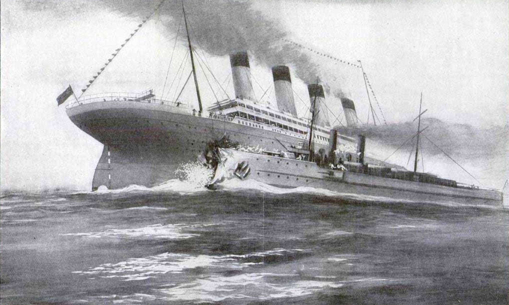

TITANIC
vs.
OLYMPIC
¿Se hundió realmente el barco equivocado?
Los hechos más sorprendentes de una teoría que sigue generando debate.
01 · EL ORIGEN DE LA SOSPECHA
Dos barcos casi idénticos
El Titanic y el Olympic eran transatlánticos de la misma compañía: White Star Line.
Se construyeron uno detrás del otro en los astilleros Harland & Wolff, en Belfast.
El Olympic fue botado en 1910; el Titanic, en 1911.
Dato clave: Olympic 400 y Titanic 401.

02 · EL HECHO QUE ALIMENTÓ LA TEORÍA
El choque del Olympic en 1911
EL ACCIDENTE
En septiembre de 1911, el Olympic chocó con el buque de guerra HMS Hawke y tuvo que volver al astillero.

LA SOSPECHA
La teoría afirma que la compañía quiso hundir el Olympic haciéndolo pasar por el Titanic para cobrar el seguro.

El accidente ocurrió realmente; el supuesto plan secreto no está demostrado.
03 · LA PARTE MÁS LLAMATIVA
¿Cómo habría funcionado el supuesto intercambio?
1. CAMBIAR
Habrían intercambiado nombres, placas y detalles visibles de los dos barcos.
2. NAVEGAR
El Olympic habría salido al mar con la identidad del Titanic.
3. COBRAR
El hundimiento habría sido intencional para recibir el seguro.
No existen documentos fiables que prueben ese plan.
04 · VEREDICTO
¿Se hundió el barco equivocado?
NO HAY PRUEBAS DE QUE SE HAYAN INTERCAMBIADO.
El Titanic se hundió el 15 de abril de 1912, tras chocar contra un iceberg.
El Olympic siguió navegando hasta 1935; su historia está documentada.
Los registros y el naufragio respaldan que el pecio es el Titanic (n.º 401).
1 / 5